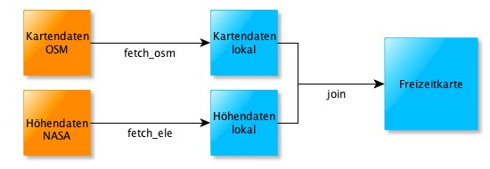
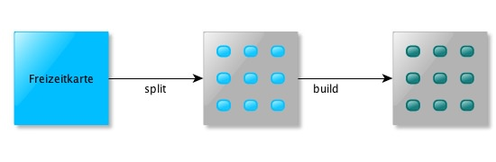
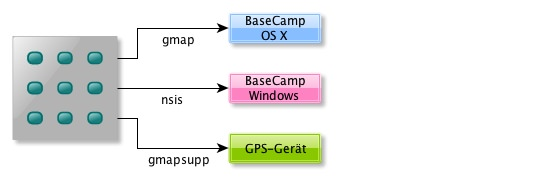

Workflow zur Erstellung einer Freizeitkarte basierend auf einem existierenden Extrakt (Beispiel: Freizeitkarte_HAMBURG):
1. bootstrap:
- (Einmaliges) Komplettieren der Entwicklungsumgebung
- Laden der bounds- und sea-Dateien
- Kommando: perl mt.pl bootstrap
2. create:
- Löschen von "alten" Daten
- Neuanlegen von erforderlichen Verzeichnissen
- Kommando: perl mt.pl create Freizeitkarte_HAMBURG

3a. fetch_osm:
- Laden der OSM-Kartendaten für das Bundesland Hamburg
- Datenquelle: OSM-Extrakt von geofabrik
- der Download erfolgt via Utility "curl" (OS X) oder "wget" (Windows)
- Kommando: perl mt.pl fetch_osm Freizeitkarte_HAMBURG
3b. fetch_ele:
- Laden der Höhendaten (elevations) für das Bundesland Hamburg
- Datenquelle: www.freizeitkarte-osm.de
- der Download erfolgt via Utility "curl" (OS X) oder "wget" (Windows)
- Kommando: perl mt.pl fetch_ele Freizeitkarte_HAMBURG
4. join:
- Zusammenführen der Karten- und Höhendaten
- auch erforderlich wenn nur Kartendaten verarbeitet werden sollen
- Kommando: perl mt.pl join Freizeitkarte_HAMBURG

5. split:
- Aufteilen (split) der OSM-Daten in Kacheln
- Kommando: perl mt.pl split Freizeitkarte_HAMBURG
6. build:
- Erzeugen einer individuellen Konfigurationsdatei
- Erzeugen aller Karten-Images (img, mdx, tdb)
- Kommando: perl mt.pl build Freizeitkarte_HAMBURG

7a. gmap:
- Erzeugen eines individuellen TYP-Files
- Erzeugen einer gmap-Datei zur Installation unter OS X ("Garmin MapManager")
- Kommando: perl mt.pl gmap Freizeitkarte_HAMBURG
7b. nsis:
- Erzeugen eines individuellen TYP-Files
- Erzeugen einer Input-Datei für den NSIS-Compiler
- Erzeugen einer ausführbaren Windows-Installerdatei
- diese Option ist nur fü Windows und Linux implementiert
- Kommando: perl mt.pl nsis Freizeitkarte_HAMBURG
7c. gmapsupp:
- Erzeugen eines gmapsupp-Image-Datei
- Kommando: perl mt.pl gmapsupp Freizeitkarte_HAMBURG
7d. imagedir:
- Erzeugen der von Qlandkarte GT (und anderen Anwendungen) lesbaren Verzeichniss Struktur
- Kommando: perl mt.pl imagedir Freizeitkarte_HAMBURG